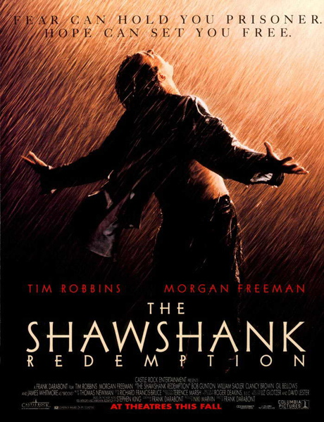

Editing
Editing is the most important part of post-production. You have to take hours of footage you shot and turn it into a cohesive story. That means sitting through all of the failure shots, paying attention to which takes were the best, and making sure there weren't any mess-ups while filming. You have to cut and splice clips together to make them flow nicely. You also have to see if the movie has a good flow. If there is too much dialogue or too little action in certain places, it can break the flow of the movie. You may even have to take away entire scenes if they do not fit in the flow properly.
Visual Effects
|
After a film is edited to reflect the final product, special effects and color corrections can be added. These effects should be added when editing is done so that you do not spend time making effects that you end up not using. |
|
Audio Effects and Soundtrack
You will also need audio effects to truly set your characters in a world that feels real. It's highly unlikely that you will capture every sound you want while filming. Therefore, you will need to record those sounds elsewhere and add them to your film. This may be actors re-recording their lines or small sound effects like cars driving by. Another important feature is music. You will need to compose your own music or hire someone to do it for you. You may purchase the rights to use songs that already exist from popular artists, but they normally cost a small fortune for just a few seconds in your movie.
Marketing
If you want people to watch your movie, you need to market it. This means making trailers and posters for your movie. Share those trailers and posters wherever you can. Nobody's going to see your movie if they don't know about it.